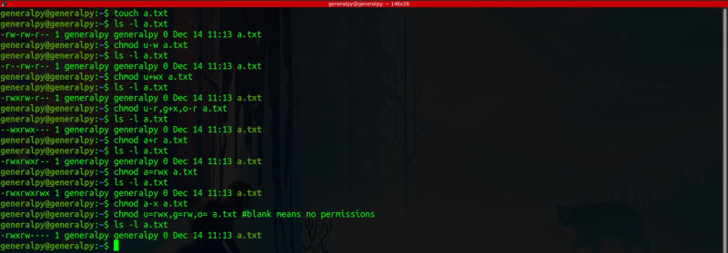
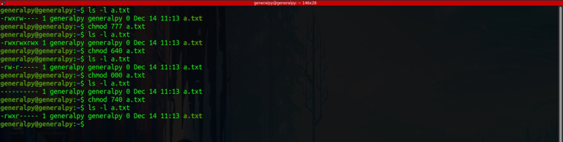
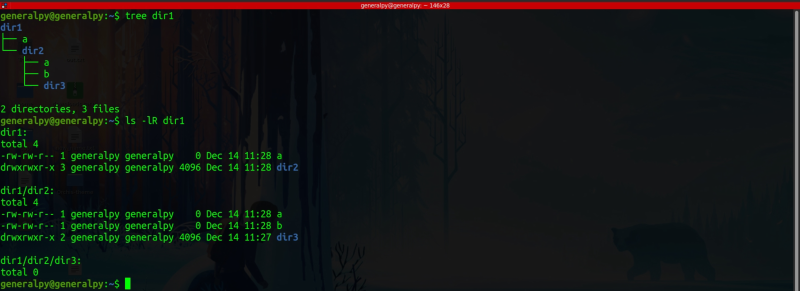
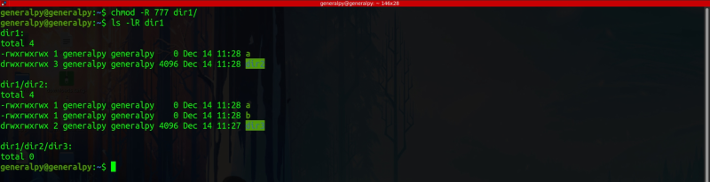
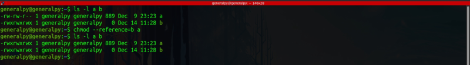

chmod command is used to change file permissions of a file or directory using numeric or symbolic method.
Only root or file owner can change these permissions.
Syntax for changing permissions using symbols :
chmod [who][action][permissions] file_or_dir
who is the user category whose permissions you want to change :
Possible values are u for user, g for group and o for other users and a for all classes. Each class permissions can be seaparated by a ,(comma).
Action specified what you want to do. Possible values are :
1. + : Add new permissions
2. - : Remove existing permissions
3. = : Changes existing permissions to required permissions. For ex we have rw permissions currently. To change to r we can either use -w or use =r .
We can then give permissions using symbols r,w,x.

As we can see, changing file permissions using symbols is tedious task, so we will use numbers instead. When using numbers, we don't have to specifiy for whom we are changing, we can directly write sum numbers in order usergroupothers
for example :
chmod 777 a.txt7 means everything and we gave 7 to user, group and others respectively so final permissions of file will be rwxrwxrwx.

We can use -R flag to run chmod recursively, for example in directories.
Current permissions.

New Permissions

This type of command is usually not recommended as directories have different effect due to file permissions.
We can use --reference flag to use other file as a reference for permissions.
